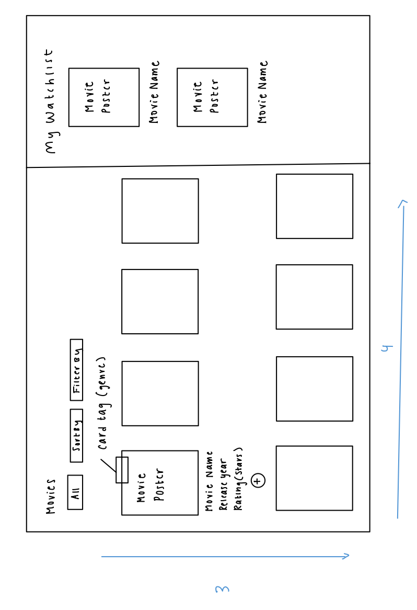

Goal
The goal of this assigment was to create a simple, functional aggregator interface using React. More specifically, we
were given creative liberty in design to encourage the practice of competitive analysis amongst various existing
aggregator interfaces of choice.
Challenges
On first impression, this seemed like a challenging assigment on two fronts. First, critical analysis of websites through the
perspective of strong design principles, rather than an everyday user. Secondly, it was evident that this project required
a higher level of planning and organization than prior projects, with a heavier focus on component relationships.
GOAL: For each website, observe how they sort and filter information in their favoriting function.
How do these decisions impact the user? What works well on this page and what doesn’t?
Comparative Analysis of Website Features
Through conducting an analysis of these three sites, I concluded that although they all share the very basic concept of
favoriting or saving an item, each has slight but impactful differences that affect a user’s interaction with the favorite function.
All sites presented their list items in the form of cards with a variation of information beneath the card. However, this is where they started to differ
- regarding the user action of favoriting the item itself, Pinterest requires a user to hover over the card, whereas Depop and NYT have the “favorite”
button directly on the card itself. Next, after an item is favorited, all three sites change the color of the favorite button (principle of contrast)
to indicate a successful save, but only Pinterest has a direct notification. NYT and Depop’s favoriting-related design factors are likely more successful
than Pinterest, because these sites both display cards in rows, with a descriptor of each row above (satisfying Gestalt’s principle of proximity). On the other hand,
Pinterest displays its cards to fill in open spaces vertically - due to the fact that the card size adjusts to the size of the image, this results in a column-oriented
layout (going against the “Z scan pattern”). Lastly, between NYT and Depop, it appears that NYT may be more successful, as it uses category tags, various fonts, and color
coding to differentiate various item categories.
[Reflection]
This competitive analysis excersize helped make the overall task less daunting - it helped me understand that "good design" can be broken into a combination of
simpler components that can be recreated more easily. Splitting the overarching task into smaller goals was effective in helping me analyze and understand the various
design choices made by each company.
Given these reflections, how would you implement your own list-based interface? What factors and designs would you like to implement based on what worked well and what didn’t?
Pick a theme that can make use of lists AND an aggregator. For whichever theme you pick,
think about how you can make use of props, components, and states to display and process data.
Theme: Movie Watchlist
When brainstorming themes that would fit the above criteria, I took the approach of thinking of lists that are useful
to me, and came up with the idea of a Movie Watchlist theme. Watching movies is one of my biggest hobbies, and I feel that
I always have a large list of movies that I want to watch, and often forget as it isn't written down anywhere.
Meeting the Criteria
The list requirement is satisfied through the list of movies displayed in cards. The movies are aggregated with the "Add to watchlist +"
button to a separate watchlist. They can be filtered by theme and language, and sorted by release year (ascending or descending). The watchlist
can additionally be reset. Given the assignment requirements and the inspiration I drew from the competitive analysis exercise, I hand-sketched
the following prototype:

Project Conclusion + Reflection
Overall, I found this project to be very rewarding and not as intimidating as I had originally imagined. I feel that I was able to get a better grasp
of the front-end design concepts I learned in 32, and use past projects from 32 and this class to create a functional aggregator interface. Personally, this further
reafirmed my preference for front-end design and analysis as opposed to back-end, and taught me to think of front-end from a more technical standpoint technical
before.
 Website 2: Depop
Website 2: Depop
 Website 3: Pinterest
Website 3: Pinterest